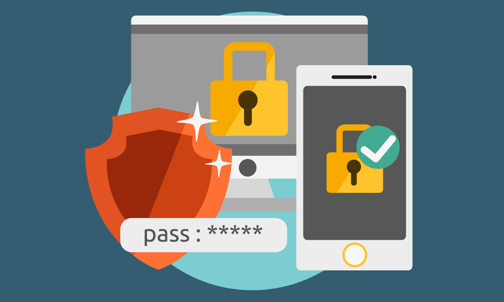
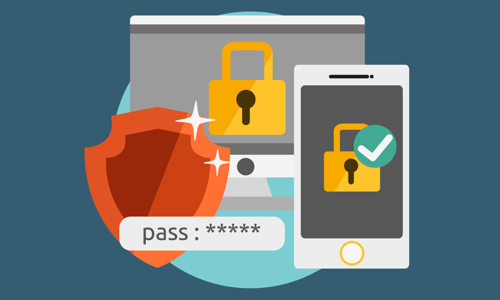

Cifrado Simetrico
Aqui te informaremos sobre la Privacidad con Cifrado Simetrico

Sistemas de cifrado simétrico
Un sistema de cifrado simétrico es un tipo de cifrado que usa una misma clave para cifrar y para descifrar. Las dos partes que se comunican mediante el cifrado simétrico deben estar de acuerdo en la clave a usar de antemano. Una vez de acuerdo, el remitente cifra un mensaje usando la clave, lo envía al destinatario, y éste lo descifra usando la misma clave. Como ejemplo de sistema simétrico está «Enigma»; Éste es un sistema que fue usado por Alemania, en el que las claves se distribuían a diario en forma de libros de códigos. Cada día, un operador de radio, receptor o transmisor, consultaba su copia del libro de códigos para encontrar la clave del día. Todo el tráfico enviado por ondas de radio durante aquel día era cifrado y descifrado usando las claves del día. Algunos ejemplos actuales de algoritmos simétricos son 3DES, Blowfish e IDEA.

Seguridad
Un buen sistema de cifrado pone toda la seguridad en la clave y ninguna en el algoritmo. En otras palabras, no debería ser de ninguna ayuda para un atacante conocer el algoritmo que se está usando. Sólo si el atacante obtuviera la clave, le serviría conocer el algoritmo. Los algoritmos de cifrado usados en GnuPG tienen estas propiedades. Dado que toda la seguridad está en la clave, es importante que sea muy difícil adivinar el tipo de clave. Esto quiere decir que el abanico de claves posibles, o sea, el espacio de posibilidades de claves, debe ser amplio. Richard Feynman fue famoso en Los Álamos por su habilidad para abrir cajas de seguridad. Para alimentar la leyenda que había en torno a él, llevaba encima un juego de herramientas que incluían un estetoscopio. En realidad, utilizaba una gran variedad de trucos para reducir a un pequeño número la cantidad de combinaciones que debía probar, y a partir de ahí simplemente probaba hasta que adivinaba la combinación correcta. En otras palabras, reducía el tamaño de posibilidades de claves.
Informacion
En este vídeo te voy a explicar la definición y características de la criptografía simétrica así como las ventajas y desventajas de este tipo de criptografía. También veremos como funciona y los tipos principales que existen: cifrado flujo y cifrado bloques. Además comentaremos el algoritmo para compartir claves Diffie-Hellman.
 
